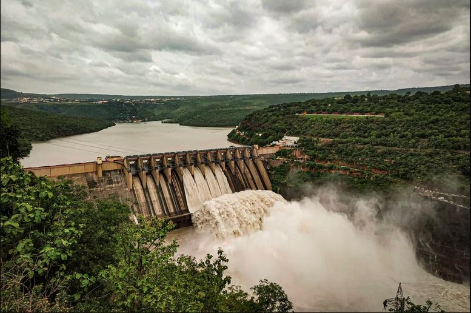

Hver sommer tilbyr vi tidsbegrensede utstillinger!

Tussedal dam har historisk sett vært serdeles viktig for bygda. Demningen brukes nå som vannkraftverk, og er den største næringen i Tusseldal.
Når sommeren kommer, vil faste turtider legges ut som arrangement her.
Det er også mulig å booke privat guidet tur, ta kontakt med museet på epost eller tlf for mer informasjon og booking.